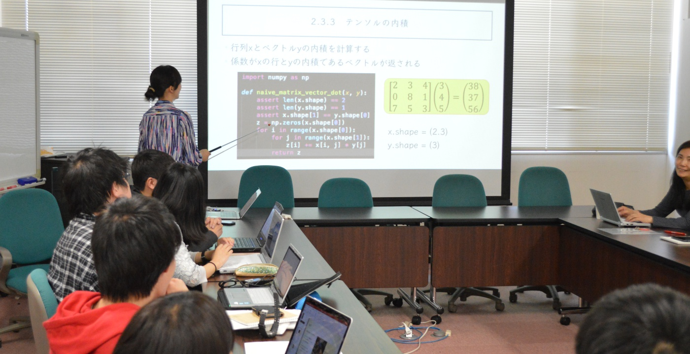

Professor
加藤 ジェーン
Kato Jien
Professor , Visual Information Processing Laboratory Information Technology Science Ritsumeikan University, Japan
王 彧
WANG Yu
Assistant Professor , Graduate School of International Development Ritsumeikan University, Japan
学歴
2013.03 名古屋大学大学院情報科学研究科 社会システム情報学専攻 博士後期課程 博士（工学）
2010.03 名古屋大学大学院情報科学研究科 社会システム情報学専攻 博士後期課程 修士（情報科学）
職歴
2017.04-現在 名古屋大学大学院国際開発研究科 助教
2016.04-2017.03 名古屋大学大学院情報科学研究科 特任助教
2014.04-2016.03 日本学術振興会(JSPS) 外国人特別研究員
2013.04-2014.03 日本学術振興会(JSPS) 特別研究員PD
2012.04-2013.03 日本学術振興会(JSPS) 特別研究員DC2
2005.12-2007.06 Compal Electronics, Oversea Research Center, R&D Engineer

